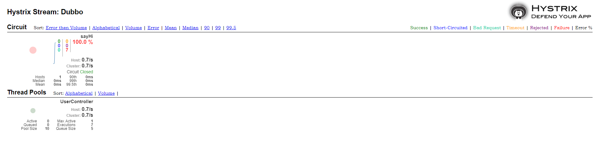

使用熔断器仪表盘监控
在 Provider 和 Consumer 项目增加 Hystrix 仪表盘功能，两个项目的改造方式相同（这里以 Consumer 为例）
在 pom.xml 中增加依赖
1 | <dependency> |
在 Application 中增加 @EnableHystrixDashboard 注解
1 | package com.example.hello.dubbo.service.user.consumer; |
创建 hystrix.stream 的 Servlet 配置
Spring Boot 2.x 版本开启 Hystrix Dashboard 与 Spring Boot 1.x 的方式略有不同，需要增加一个 HystrixMetricsStreamServlet 的配置，代码如下：1
2
3
4
5
6
7
8
9
10
11
12
13
14
15
16
17
18
19package com.example.hello.dubbo.service.user.consumer.config;
import com.netflix.hystrix.contrib.metrics.eventstream.HystrixMetricsStreamServlet;
import org.springframework.boot.web.servlet.ServletRegistrationBean;
import org.springframework.context.annotation.Bean;
import org.springframework.context.annotation.Configuration;
public class HystrixDashboardConfiguration {
public ServletRegistrationBean getServlet() {
HystrixMetricsStreamServlet streamServlet = new HystrixMetricsStreamServlet();
ServletRegistrationBean registrationBean = new ServletRegistrationBean(streamServlet);
registrationBean.setLoadOnStartup(1);
registrationBean.addUrlMappings("/hystrix.stream");
registrationBean.setName("HystrixMetricsStreamServlet");
return registrationBean;
}
}
测试 Hystrix Dashboard
浏览器端访问 http://localhost:9090/hystrix 界面如下：

点击 Monitor Stream，进入下一个界面，访问 http://localhost:9090/hi 触发熔断后，监控界面显示效果如下：

附：Hystrix 说明
什么情况下会触发 fallback 方法
| 名字 | 描述 | 触发fallback |
|---|---|---|
| EMIT | 值传递 | NO |
| SUCCESS | 执行完成，没有错误 | NO |
| FAILURE | 执行抛出异常 | YES |
| TIMEOUT | 执行开始，但没有在允许的时间内完成 | YES |
| BAD_REQUEST | 执行抛出HystrixBadRequestException | NO |
| SHORT_CIRCUITED | 断路器打开，不尝试执行 | YES |
| THREAD_POOL_REJECTED | 线程池拒绝，不尝试执行 | YES |
| SEMAPHORE_REJECTED | 信号量拒绝，不尝试执行 | YES |
fallback 方法在什么情况下会抛出异常
| 名字 | 描述 | 抛异常 |
|---|---|---|
| FALLBACK_EMIT | Fallback值传递 | NO |
| FALLBACK_SUCCESS | Fallback执行完成，没有错误 | NO |
| FALLBACK_FAILURE | Fallback执行抛出出错 | YES |
| FALLBACK_REJECTED | Fallback信号量拒绝，不尝试执行 | YES |
| FALLBACK_MISSING | 没有Fallback实例 | YES |
Hystrix Dashboard 界面监控参数

Hystrix 常用配置信息
超时时间（默认1000ms，单位：ms）
hystrix.command.default.execution.isolation.thread.timeoutInMilliseconds：在调用方配置，被该调用方的所有方法的超时时间都是该值，优先级低于下边的指定配置hystrix.command.HystrixCommandKey.execution.isolation.thread.timeoutInMilliseconds：在调用方配置，被该调用方的指定方法（HystrixCommandKey 方法名）的超时时间是该值
线程池核心线程数
hystrix.threadpool.default.coreSize：默认为 10
Queue
hystrix.threadpool.default.maxQueueSize：最大排队长度。默认 -1，使用SynchronousQueue。其他值则使用LinkedBlockingQueue。如果要从 -1 换成其他值则需重启，即该值不能动态调整，若要动态调整，需要使用到下边这个配置hystrix.threadpool.default.queueSizeRejectionThreshold：排队线程数量阈值，默认为 5，达到时拒绝，如果配置了该选项，队列的大小是该队列
注意： 如果 maxQueueSize=-1 的话，则该选项不起作用
断路器
hystrix.command.default.circuitBreaker.requestVolumeThreshold：当在配置时间窗口内达到此数量的失败后，进行短路。默认 20 个（10s 内请求失败数量达到 20 个，断路器开）hystrix.command.default.circuitBreaker.sleepWindowInMilliseconds：短路多久以后开始尝试是否恢复，默认 5shystrix.command.default.circuitBreaker.errorThresholdPercentage：出错百分比阈值，当达到此阈值后，开始短路。默认 50%
fallback
hystrix.command.default.fallback.isolation.semaphore.maxConcurrentRequests：调用线程允许请求HystrixCommand.GetFallback()的最大数量，默认 10。超出时将会有异常抛出，注意：该项配置对于 THREAD 隔离模式也起作用
属性配置参数
- 参数说明：https://github.com/Netflix/Hystrix/wiki/Configuration
- 参考博客：https://www.funtl.com/zh/apache-dubbo-rpc/Dubbo-Hystrix-%E7%86%94%E6%96%AD%E5%99%A8%E4%BB%AA%E8%A1%A8%E7%9B%98.html
案例源码：https://github.com/V-Vincen/hello-dubbo
If you like this blog or find it useful for you, you are welcome to comment on it. You are also welcome to share this blog, so that more people can participate in it. If the images used in the blog infringe your copyright, please contact the author to delete them. Thank you !